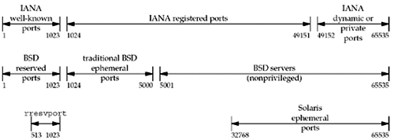

2.9 Port Numbers
At any given time, multiple processes can be using any given transport: UDP, SCTP, or TCP. All three transport layers use 16-bit integer port numbers to differentiate between these processes.
When a client wants to contact a server, the client must identify the server with which it wants to communicate. TCP, UDP, and SCTP define a group of well-known ports to identify well-known services. For example, every TCP/IP implementation that supports FTP assigns the well-known port of 21 (decimal) to the FTP server. Trivial File Transfer Protocol (TFTP) servers are assigned the UDP port of 69.
Clients, on the other hand, normally use ephemeral ports, that is, short-lived ports. These port numbers are normally assigned automatically by the transport protocol to the client. Clients normally do not care about the value of the ephemeral port; the client just needs to be certain that the ephemeral port is unique on the client host. The transport protocol code guarantees this uniqueness.
The Internet Assigned Numbers Authority (IANA) maintains a list of port number assignments. Assignments were once published as RFCs; RFC 1700 [Reynolds and Postel 1994] is the last in this series. RFC 3232 [Reynolds 2002] gives the location of the online database that replaced RFC 1700: http://www.iana.org/. The port numbers are divided into three ranges:
The well-known ports: 0 through 1023. These port numbers are controlled and assigned by the IANA. When possible, the same port is assigned to a given service for TCP, UDP, and SCTP. For example, port 80 is assigned for a Web server, for both TCP and UDP, even though all implementations currently use only TCP. At the time that port 80 was assigned, SCTP did not yet exist. New port assignments are made for all three protocols, and RFC 2960 states that all existing TCP port numbers should be valid for the same service using SCTP.
The registered ports: 1024 through 49151. These are not controlled by the IANA, but the IANA registers and lists the uses of these ports as a convenience to the community. When possible, the same port is assigned to a given service for both TCP and UDP. For example, ports 6000 through 6063 are assigned for an X Window server for both protocols, even though all implementations currently use only TCP. The upper limit of 49151 for these ports was introduced to allow a range for ephemeral ports; RFC 1700 [Reynolds and Postel 1994] lists the upper range as 65535. The dynamic or private ports, 49152 through 65535. The IANA says nothing about these ports. These are what we call ephemeral ports. (The magic number 49152 is three-fourths of 65536.)
Figure 2.10 shows this division, along with the common allocation of the port numbers.

We note the following points from this figure:
Unix systems have the concept of a reserved port, which is any port less than 1024. These ports can only be assigned to a socket by an appropriately privileged process. All the IANA well-known ports are reserved ports; hence, the server allocating this port (such as the FTP server) must have superuser privileges when it starts. Historically, Berkeley-derived implementations (starting with 4.3BSD) have allocated ephemeral ports in the range 1024–5000. This was fine in the early 1980s, but it is easy today to find a host that can support more than 3977 connections at any given time. Therefore, many newer systems allocate ephemeral ports differently to provide more ephemeral ports, either using the IANA-defined ephemeral range or a larger range (e.g., Solaris as we show in Figure 2.10). As it turns out, the upper limit of 5000 for the ephemeral ports, which many older systems implement, was a typo [Borman 1997a]. The limit should have been 50,000.
There are a few clients (not servers) that require a reserved port as part of the client/server authentication: the rlogin and rsh clients are common examples. These clients call the library function rresvport to create a TCP socket and assign an unused port in the range 513–1023 to the socket. This function normally tries to bind port 1023, and if that fails, it tries to bind 1022, and so on, until it either succeeds or fails on port 513. Notice that the BSD reserved ports and the rresvport function both overlap with the upper half of the IANA well-known ports. This is because the IANA well-known ports used to stop at 255. RFC 1340 (a previous "Assigned Numbers" RFC) in 1992 started assigning well-known ports between 256 and 1023. The previous "Assigned Numbers" document, RFC 1060 in 1990, called ports 256–1023 the Unix Standard Services. There are numerous Berkeley-derived servers that picked their well-known ports in the 1980s starting at 512 (leaving 256–511 untouched). The rresvport function chose to start at the top of the 512–1023 range and work down.
Socket Pair
The socket pair for a TCP connection is the four-tuple that defines the two endpoints of the connection: the local IP address, local port, foreign IP address, and foreign port. A socket pair uniquely identifies every TCP connection on a network. For SCTP, an association is identified by a set of local IP addresses, a local port, a set of foreign IP addresses, and a foreign port. In its simplest form, where neither endpoint is multihomed, this results in the same four-tuple socket pair used with TCP. However, when either of the endpoints of an association are multihomed, then multiple four-tuple sets (with different IP addresses but the same port numbers) may identify the same association.
The two values that identify each endpoint, an IP address and a port number, are often called a socket.
We can extend the concept of a socket pair to UDP, even though UDP is connectionless. When we describe the socket functions (bind, connect, getpeername, etc.), we will note which functions specify which values in the socket pair. For example, bind lets the application specify the local IP address and local port for TCP, UDP, and SCTP sockets.
|